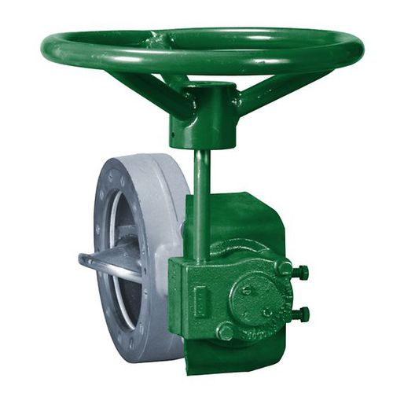

Methods of valve actuation fall into one of the following categories:
1.Linear
2.Part-turn
3.Multi-turn
Each of the above methods can be powered by one of the following sources:
1.Hydraulic
2.Electric
3.Pneumatic
Rotary actuators vary in terms of actuator torque and range of motion. Depending on the valve’s design, the stem may rise during rotation or without rotation. Common ranges of motion include 90-degree (part-turn), 180-, 270-, and 360-degree (multi-turn). As such, rotary actuators may be used for valves such as ball, plug and butterfly.
Linear valve actuators differ in terms of valve stem stroke length, number of turns, and actuator force or seating thrust. The term stroke is used to define the travel required to have the valve fully opened to fully closed. Using an actuator with fewer strokes than the valve will "short stroke" the valve and the full control volume rating of the valve will not be realised.
Linear actuators are used to actuate valves such as gate, globe and diaphragm valves.
Manual valve actuators do not require an outside power source to move a valve to a desired position. Instead, they use a handwheel, chainwheel, lever, or declutchable mechanism to drive a series of gears whose ratio results in a higher output torque compared to the input (manual) torque. Most manual valve actuators use worm gears, mechanical devices that transmit motion between non-intersecting right-angle axes.
By there very nature, there is little which can fail on a manual valve actuator. For this reason, they tend not to require failsafe mechanisms and instead find common use as failsafes / over-rides for other valve actuators.
The actuator must deliver enough torque to move and seat the valvewith the minimum power supply available and also maintain the required position (open, closed, or intermediate) under the worst flowconditions that the valve might experience.
The actuator must be capable of completing the travel, that is, 90°,180°, and multi-turn at the required speed.
The actuator must include a device that prevents excessive forcesbeing applied to the valve under adverse power supply conditions.
The actuators fail-safe position must be considered and appropriate systems put in place to facilitate this.